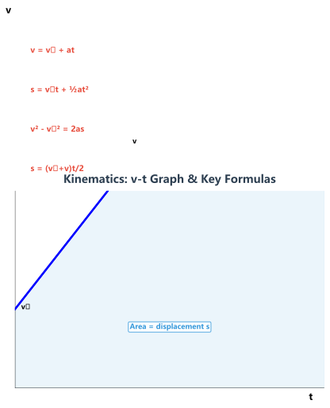
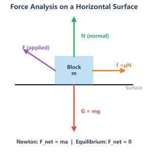
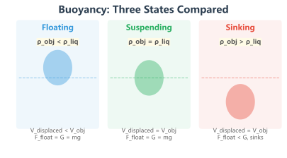
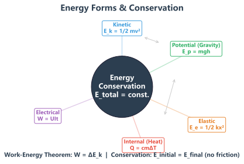
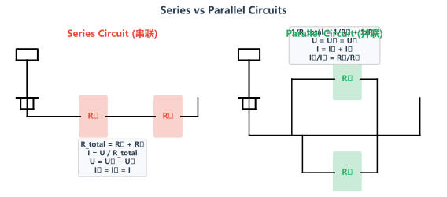

使用说明：公式中所有物理量均使用国际单位制（SI）。计算时先统一单位再代入。g在无特殊说明时取9.8N/kg（粗略计算取10N/kg）。
专题一：运动学公式
运动基础
运动学研究的是物体运动的规律——不涉及力的分析，只描述运动的快慢和方向。匀速直线运动和匀变速直线运动是中考的考查重点。

匀变速直线运动 v-t 图像与关键公式
基本运动公式
速度
v = s/t
s路程(m)，t时间(s)，v速度(m/s)
速度换算
1m/s = 3.6km/h
乘以3.6就是km/h；除以3.6就是m/s
平均速度
v̄ = s总/t总
全程总路程 ÷ 总时间
匀变速直线运动（高中衔接，初中理解）
速度-时间公式
v = v₀ + at
v₀初速度，a加速度，t时间
位移公式
s = v₀t + ½at²
初速度×时间 + ½加速度×时间平方
速度-位移公式
v² - v₀² = 2as
不含时间的公式，常用
理解要点：v-t图像中图线下的"面积"就是位移（路程）。匀速直线运动的图线是水平直线，匀加速直线运动是倾斜直线。
【例题】一辆汽车以20m/s的速度匀速行驶，突然发现前方有障碍物，司机紧急刹车。刹车后汽车做匀减速运动，加速度大小为5m/s²。求：
(1) 刹车后3秒钟汽车的速度；
(2) 刹车后6秒钟汽车的位移。
解：
(1) v = v₀ + at = 20 + (-5)×3 = 20-15 = 5 (m/s)
(2) 先求停车时间：0 = 20 + (-5)×t → t = 4s
所以4秒时车已停下，6秒的位移等于4秒的位移。
s = v₀t + ½at² = 20×4 + ½×(-5)×4² = 80 - 40 = 40 (m)
或 s = (v²-v₀²)/(2a) = (0-400)/(-10) = 40 (m)
关键点：第(2)问必须先判断汽车几秒后停下。如果直接代入6秒，会算出负值——因为车早就停了！这类"先求停止时间"的问题一定要警惕。
• 某物体做匀速直线运动，5秒内走了20米，求速度和平均速度。
• 一列火车长200m，以72km/h的速度匀速通过一座长1600m的桥，求通过桥梁需要多长时间？
专题二：力学公式
核心专题
力学是物理学的根基。初中力学主要包括力的概念、重力、弹力、摩擦力的分析以及力的合成与平衡。力的受力分析是解决力学问题的第一步。

水平面上物体的受力分析图——弄清每个力的方向
力与运动
重力
G = mg (g=9.8N/kg)
质量越大越重；粗略取g=10
弹力（胡克定律）
F = kx
k劲度系数(N/m)，x形变量(m)
牛顿第一定律
F=0时保持匀速或静止
惯性定律——力不是维持运动的原因
力的合成
同向合力
F = F₁+F₂
方向相同，合力等于两力之和
反向合力
F = |F₁-F₂|
方向相反，合力等于两力之差
易错提醒：① 重力总是竖直向下，不是垂直于接触面；② 摩擦力的方向与相对运动（趋势）方向相反，不是与运动方向相反；③ 相互接触不一定有弹力，需要挤压才行。
【例题】一个质量为5kg的物体静止在水平桌面上，(1)求物体所受的重力；(2)若用20N的水平力拉物体，物体仍保持静止，求此时物体所受的摩擦力。
解：
(1) G = mg = 5×9.8 = 49 (N)，方向竖直向下
(2) 物体静止，受力平衡。水平方向：拉力F=20N向右，摩擦力f向左。
由二力平衡得 f = F = 20 (N)，方向水平向左。
此时摩擦力为静摩擦力，不是滑动摩擦力。
注意区分静摩擦力和滑动摩擦力！物体静止时受"静摩擦力"，大小由平衡条件决定（不一定等于μN）。只有当物体运动时，才用f=μN计算滑动摩擦力。
• 一个质量为2kg的箱子放在水平地面上，用10N的力水平推它但没有推动，箱子受到的摩擦力是多少？
• 物体在月球上的重力是地球上的1/6，一个在地球上重600N的人在月球上的质量和重力分别是多少？
专题三：浮力与压强
中考热点
浮力和压强是中考物理的高频考点，浮力的三种状态（漂浮、悬浮、沉底）是区分度最高的题型。阿基米德原理是浮力计算的核心。

浮力三种状态对比：漂浮、悬浮、沉底
压强公式
固体压强
p = F/S
F压力(N)，S受力面积(m²)。压力的作用效果
液体压强
p = ρgh
ρ液体密度，h深度。与液体重力无关！
标准大气压
p₀ = 1.013×10⁵Pa
76cmHg汞柱。初中取1×10⁵Pa
浮力公式与状态
阿基米德原理
F浮 = ρ液gV排
浮力=排开液体所受重力。核心公式！
称重法测浮力
F浮 = G - F示
空气中重力减去浸入液中测力计示数
漂浮/悬浮
F浮 = G (物)
二力平衡，浮力等于物体重力
浮沉条件（关键！）
| 状态 | 受力关系 | 密度关系 | 特征 |
|---|
| 上浮→漂浮 | F浮 > G | ρ物 < ρ液 | 最终露出部分体积，V排 < V物 |
| 悬浮 | F浮 = G | ρ物 = ρ液 | 可停留在液体中任意位置 |
| 下沉→沉底 | F浮 < G | ρ物 > ρ液 | 沉到容器底部，F浮 = G - N支 |
理解要点：浮力大小只与"液体密度"和"排开液体的体积"有关，与物体本身的体积、质量、形状、材质无关。潜水艇是通过改变自身重力（注水/排水）来实现浮沉的。
【例题】一个体积为0.1m³的物体，重800N，将其放入水中（ρ水=1.0×10³kg/m³，g=10N/kg）。求：
(1) 物体完全浸没时受到的浮力；
(2) 物体最终是漂浮、悬浮还是沉底？最终受到的浮力是多少？
解：
(1) 完全浸没时 V排 = V物 = 0.1m³
F浮 = ρ水gV排 = 1.0×10³×10×0.1 = 1000 (N)
(2) 完全浸没时 F浮=1000N > G=800N，所以物体上浮，最终漂浮。
漂浮时二力平衡：F浮' = G = 800 (N)
此时 V排' = F浮'/(ρ水g) = 800/(1000×10) = 0.08 (m³)，即物体有0.02m³露出水面。
浮力题的做题顺序：①先求完全浸没时的浮力；②与重力比较判断浮沉状态；③根据最终状态再求浮力。漂浮时"浮力=重力"是重要等式。
• 潜水艇在水下200m处受到的压强是多少？
• 一个木块的密度为0.6g/cm³，体积为500cm³，放入水中求木块受到的浮力。
• 人为什么从浅水区走向深水区时会感觉身体越来越"轻"？
专题四：功与能
能量守恒
功是力在空间上的积累，能是物体做功的本领。功与能的核心关系是：做功的过程就是能量转化的过程，做了多少功就有多少能量发生转化。

能量守恒：各种形式的能量可以相互转化，总量保持不变
功
W = Fs
F与s同向。F单位N，s单位m
F与s垂直时做功为0
功率
P = W/t = Fv
W功(J)，t时间(s)。P=Fv用于匀速运动
动能
Ek = ½mv²
质量m(kg)，速度v(m/s)。速度影响更大
重力势能
Ep = mgh
质量m(kg)，高度h(m)。相对参考面
机械能守恒
Ek₁+Ep₁=Ek₂+Ep₂
只有重力/弹力做功时守恒
易错提醒：① 提水桶水平走路——人对水桶不做功（力与距离垂直）；② 功率越大不代表做功越多，还和时间有关；③ 动能与速度平方成正比，速度加倍动能变为4倍。
【例题】一辆质量为1.2t的小汽车以54km/h的速度匀速行驶，发动机的功率为60kW。求：
(1) 汽车的牵引力；
(2) 汽车行驶10分钟发动机做的功。
解：
(1) v = 54km/h = 15m/s
由 P = Fv 得 F = P/v = 60000/15 = 4000 (N)
(2) t = 10min = 600s
W = Pt = 60000×600 = 3.6×10⁷ (J)
或 W = Fs = F·vt = 4000×15×600 = 3.6×10⁷ (J)
注意功率公式P=Fv的适用条件——必须是"匀速"或已知"牵引力"和"速度"的情况。用之前先统一单位（km/h→m/s）。
• 一台起重机将重5×10⁴N的货物匀速提升10m，起重机做了多少功？
• 质量相同的铁球和木球从同一高度自由落下，不计阻力，落地时谁的动能大？
专题五：简单机械
力学应用
简单机械是力学知识在生活中的应用。初中阶段主要学习杠杆、滑轮和斜面三种简单机械。机械效率反映的是机械做功的"有效程度"。
杠杆
杠杆平衡条件
F₁L₁ = F₂L₂
动力×动力臂=阻力×阻力臂。核心公式！
省力杠杆
L₁ > L₂ ⇒ F₁ < F₂
动力臂>阻力臂，省力但费距离
费力杠杆
L₁ < L₂ ⇒ F₁ > F₂
动力臂<阻力臂，费力但省距离
滑轮
定滑轮
F = G, s = h
不省力但改变力的方向
动滑轮
F = ½(G+G轮), s = 2h
省一半力但费一倍距离
滑轮组
F = G总/n, s = nh
n为承担重物的绳子股数！
机械效率
记忆技巧："n的确定"——看绕过动滑轮的绳子有几段。不论绳子从哪绕，只看有几段绳子拉着动滑轮。
【例题】用如图所示的滑轮组（n=3）将重600N的物体匀速提升2m，拉力F=250N。求：(1)有用功；(2)总功；(3)机械效率。
解：
(1) W有 = Gh = 600×2 = 1200 (J)
(2) 绳子自由端移动距离 s = nh = 3×2 = 6 (m)
W总 = Fs = 250×6 = 1500 (J)
(3) η = W有/W总 × 100% = 1200/1500 × 100% = 80%
机械效率计算的关键是正确找出"n"——绳子股数。n哪里来？看图数一数有几段绳子拉着动滑轮。s=nh是必用公式。
• 用一根长2m的木板搭成斜面，将重500N的货物推到1m高的车厢上，推力为300N，求斜面的机械效率。
• 使用动滑轮提重物，物体重100N，动滑轮重10N，绳子自由端的拉力至少是多大？
专题六：热学公式
热能基础
热学研究的是热量的传递和转化。核心概念是比热容——不同物质"吸热能力"的差异，以及热值——燃料"放热能力"的度量。
比热容（吸热放热）
Q = cmΔt
c比热容[J/(kg·℃)]，m质量(kg)，Δt温度变化(℃)
热值（燃料燃烧）
Q = mq (固体/液体)
q热值(J/kg)。m质量(kg)
热机效率
η = W/Q放 × 100%
W有用功(J)，Q放燃料放热(J)
易错提醒：① Δt = t末-t初，温度升高了用正值，降低了用负值；② 水的比热容为4.2×10³J/(kg·℃)，是常见物质中最大的——这解释了为什么海边昼夜温差比内陆小；③ 热机效率永远小于100%。
生活应用：水的比热容大→做冷却剂（汽车水箱）、做取暖介质（暖气片）。相同质量的水和沙子，吸收相同热量，水升温慢——所以海边夏天凉爽冬天暖和。
【例题】将质量为2kg、温度为20℃的水加热到100℃，需要吸收多少热量？水的比热容c=4.2×10³J/(kg·℃)。如果用热值为3×10⁷J/kg的煤气加热，热效率40%，需要多少煤气？
解：
(1) Q吸 = cmΔt = 4.2×10³×2×(100-20) = 4.2×10³×2×80 = 6.72×10⁵ (J)
(2) η = Q吸/Q放 → Q放 = Q吸/η = 6.72×10⁵/0.4 = 1.68×10⁶ (J)
Q放 = mq → m煤 = Q放/q = 1.68×10⁶/(3×10⁷) = 0.056 (kg) = 56g
热效率类问题的解题链条：燃料放热(F)→有效利用的热量→水的吸热。效率就是"有用的/总的"。注意燃料的放热不一定全部被水吸收。
• 质量为100g的铁块从80℃降到30℃，放出多少热量？（c铁=0.46×10³J/(kg·℃)）
• 太阳能热水器一天可吸收4.2×10⁶J的太阳能，效率为50%，可以将多少千克20℃的水加热到40℃？
专题七：电学公式
核心压轴
电学是中考物理的压轴板块，欧姆定律和电功率的串并联电路分析是区分度最高的知识点。掌握串并联电路的特点是解题的关键。

串联电路与并联电路的对比分析
欧姆定律
串并联电路特点对比
| 项目 | 串联 | 并联 |
|---|
| 电流 | I = I₁ = I₂（处处相等） | I = I₁+I₂（分流） |
| 电压 | U = U₁+U₂（分压） | U = U₁ = U₂（各支路相等） |
| 总电阻 | R = R₁+R₂（越串越大） | 1/R=1/R₁+1/R₂（越并越小） |
| 比例关系 | U₁/U₂ = R₁/R₂（正比分压） | I₁/I₂ = R₂/R₁（反比分流） |
电功与电功率
电功（电流做功）
W = UIt
U电压(V)，I电流(A)，t时间(s)。电功=消耗的电能
电功率
P = UI = I²R = U²/R
三个公式灵活选用，注意"纯电阻电路"条件
焦耳定律
Q = I²Rt
电流通过纯电阻产生的热量。普遍适用！
电功率单位
1kW·h = 3.6×10⁶J
度(千瓦时)与焦耳的换算
易错提醒：① P=U²/R和P=I²R只能在纯电阻电路中使用（电功全部转化为内能的电路）。电动机等非纯电阻电路只能用P=UI计算总功率；② 计算时注意U、I、R必须是同一段电路上的量（"同体性"）。
【例题】标有"6V 3W"的小灯泡与一定值电阻串联接到9V电源上，灯泡正常发光。求：(1)电路中的电流；(2)定值电阻的阻值；(3)电阻消耗的功率。
解：
(1) 灯泡正常发光时，U灯=6V，P灯=3W
I = P/U = 3/6 = 0.5 (A)
(2) 串联电路中 U总 = U灯 + U阻 → U阻 = 9-6 = 3 (V)
R阻 = U阻/I = 3/0.5 = 6 (Ω)
(3) P阻 = U阻×I = 3×0.5 = 1.5 (W)
或 P阻 = I²R = 0.5²×6 = 1.5 (W)
"正常发光"是电学题的关键信号——意味着灯泡的实际电压=额定电压、实际功率=额定功率。由此可求额定电流，进而解出其他量。
• 两个电阻R₁=10Ω、R₂=20Ω串联在6V的电源上，求电路总电流和R₁两端的电压。
• "220V 1000W"的电热水壶正常工作时的电流和电阻各是多少？连续工作30分钟消耗多少度电？
专题八：光学与声学
波动知识
光学和声学虽然在中考中占比较小，但成像规律是区分度较高的考点，特别是凸透镜成像规律几乎每年都考。
光学公式与规律
反射定律
∠入 = ∠反
三线共面、法线居中、两角相等。光路可逆
平面镜成像
物距 = 像距
等大、等距、正立、虚像。物像关于镜面对称
折射规律
n = sini/sinr
光从空气进入水/玻璃时折射角<入射角
透镜成像公式
1/f = 1/u + 1/v
f焦距，u物距，v像距。初中理解规律即可
凸透镜成像规律（核心！）
| 物距u | 像距v | 像的性质 | 应用 |
|---|
| u > 2f | f < v < 2f | 倒立、缩小的实像 | 照相机 |
| u = 2f | v = 2f | 倒立、等大的实像 | 测焦距法 |
| f < u < 2f | v > 2f | 倒立、放大的实像 | 投影仪/幻灯机 |
| u = f | — | 不成像（平行光出射） | 平行光源 |
| u < f | |v| > u | 正立、放大的虚像 | 放大镜 |
声学基础
声速公式
v = s/t
空气中声速约340m/s（15℃）
声音三要素
响度·音调·音色
响度看振幅、音调看频率、音色看材料结构
回声计算
s = vt/2
t为发出到听到回声的时间，除以2才是单程
成像规律记忆口诀："物近像远像变大，物远像近像变小。一倍焦距分虚实，二倍焦距分大小。"（u>f成实像，u2f成缩小像，u<2f成放大像）
【例题】一个凸透镜的焦距f=10cm。当物体放在距透镜25cm处时，成什么像？用在什么光学仪器上？
解：
u=25cm，f=10cm。比较u与2f：2f=20cm
u > 2f → 成倒立、缩小的实像
像距范围：f < v < 2f，即 10cm < v < 20cm
应用：照相机
凸透镜成像题的做题顺序：①找焦距f；②看物距u在哪个区间；③对照表格找性质和应用。考前建议默写一遍凸透镜成像规律表。
• 一个人站在平面镜前2m处，他的像到镜面的距离是多少？人向镜面前进1m后，像到人的距离是多少？
• 凸透镜的焦距是12cm，物体放在距透镜8cm处，能观察到什么性质？
• 某人对着一座山喊话，1.5秒后听到回声，求人到山的距离（声速340m/s）。